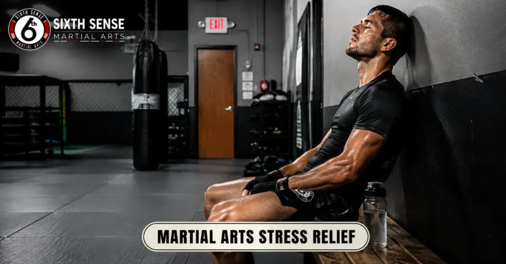
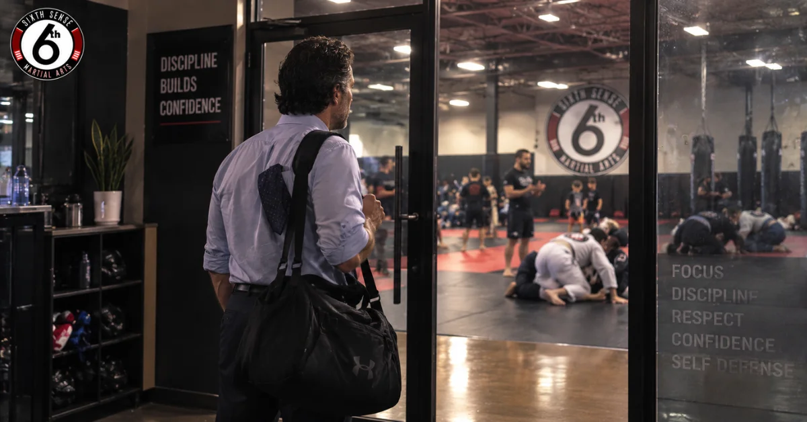
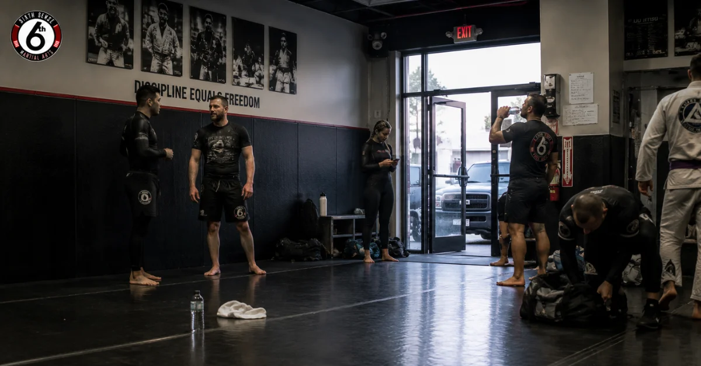

Martial Arts Stress Relief How Training Helps You Stay Calm and Focused

What Martial Arts Stress Relief Actually Feels Like
There is a moment after every training session when everything goes quiet inside your head. The emails the deadlines the arguments they all disappear for a while. That is what martial arts stress relief feels like and once you experience it you wonder how you ever lived without it. At Sixth Sense Martial Arts in Coppell TX members walk in carrying the weight of their entire day and walk out feeling lighter sharper and more present. This is not just another workout routine. It is a complete reset for your mind and body. So whether you are dealing with work pressure family responsibilities or just the noise of everyday life this guide will show you exactly how exercise and mental health connect through martial arts training.
The Science Behind Martial Arts Stress Relief
This is not just about feeling good it is backed by real science. When you train in martial arts your body reduces cortisol which is the hormone responsible for stress and anxiety. At the same time your brain releases endorphins and dopamine which are natural chemicals that elevate your mood and create a sense of calm. Research published in the Journal of Sports Science and Medicine confirms that structured physical activity like martial arts lowers cortisol and endorphins levels balance out more effectively than standard cardio exercises. Moreover a 2017 study found that people who exercise regularly report 43 percent fewer days of poor mental health. Because of this martial arts stress relief is not a trend it is a scientifically supported method of managing everyday pressure.
How BJJ Creates Martial Arts Stress Relief on the Ground
Brazilian Jiu Jitsu offers a unique form of martial arts stress relief because it demands total mental engagement. When someone is trying to submit you there is zero room in your brain for work emails or family drama. As a result every roll becomes a form of active meditation where your mind is fully locked into the present moment. Furthermore BJJ teaches you to stay calm under physical pressure which directly trains your nervous system to handle emotional pressure off the mat. Many members at Sixth Sense describe their BJJ sessions as therapy without the couch. On top of that the problem solving nature of grappling gives your brain a healthy challenge that replaces anxious thoughts with strategic thinking. This kind of combat sports anxiety relief is something no treadmill can replicate.
Martial Arts Stress Relief Through Muay Thai Striking
There is something deeply satisfying about throwing a hard kick into a heavy bag after a long stressful day. Muay Thai offers martial arts stress relief through what psychologists call destructive therapy. This means channeling negative emotions like frustration anger or anxiety into controlled powerful strikes. As a result you physically release tension that has been building up in your body all day. In addition the rhythmic nature of pad work and combination drills creates a flow state where your mind stops racing and starts focusing. Similarly the intense cardio involved in Muay Thai floods your system with cortisol and endorphins balancing chemicals that leave you feeling euphoric after class. Many members at Sixth Sense say that one hour of Muay Thai does more for their mental state than anything else they have tried. It is raw real and incredibly effective.
Why Martial Arts Stress Relief Works Better Than a Regular Gym
Most people try to manage stress by running on a treadmill or lifting weights. While those activities help with physical fitness they rarely address the mental side of stress. However martial arts stress relief works differently because it combines physical exertion with mental focus social connection and emotional regulation all in one session. Consequently you are not just burning calories you are rewiring how your brain responds to pressure. Furthermore a regular gym workout is often done alone with headphones in which means your mind keeps running on the same anxious loop. On the other hand martial arts training requires you to interact with coaches and training partners which pulls you completely out of your head. This combination of exercise and mental health benefits is what makes martial arts uniquely effective for stress management.
Martial Arts Stress Relief for Busy Professionals
If you work a high pressure job you know that stress does not just disappear when you leave the office. It follows you home and keeps you up at night. Fortunately martial arts stress relief gives working professionals a structured outlet that fits into even the busiest schedules. At Sixth Sense evening classes are designed specifically for people who need to decompress after a full day of meetings and deadlines. Moreover the discipline required in training helps professionals develop better focus and time management skills that actually improve their work performance. In fact several members have shared that their productivity at work increased after they started training because they sleep better think clearer and handle pressure with more composure. Martial arts does not add to your stress it systematically removes it and replaces it with clarity.

How Parents Find Martial Arts Stress Relief on the Mat
Parenting is one of the most rewarding jobs in the world but it is also one of the most stressful. Between school runs homework battles and managing a household most parents have very little time for themselves. However martial arts stress relief offers parents something rare which is an hour completely dedicated to their own wellbeing. At Sixth Sense many parents train while their kids attend the youth classes which makes the logistics simple. Additionally the physical intensity of training gives parents a healthy way to release the tension they carry from managing a busy family life. As a result they come home feeling more patient more present and better equipped to handle whatever the evening throws at them. The mindfulness through martial arts practice helps parents stop reacting and start responding which changes the entire energy of their household.
Martial Arts Stress Relief and Its Impact on Sleep Quality
Stress and poor sleep feed each other in a vicious cycle. You are too stressed to sleep and too tired to manage your stress. However martial arts stress relief breaks this cycle in two powerful ways. First the intense physical training exhausts your body naturally which makes falling asleep much easier. Second the mental focus required during class calms your nervous system and reduces the racing thoughts that keep you awake at night. Consequently many members at Sixth Sense report falling asleep faster staying asleep longer and waking up feeling genuinely rested after they start training regularly. Furthermore studies have shown that physical activity stress management through structured exercise improves overall sleep quality more effectively than passive relaxation techniques. If you have been struggling with insomnia or restless nights martial arts might be the solution you have been overlooking.
The Mindfulness Factor in Martial Arts Stress Relief
Most people associate mindfulness with sitting still and meditating. However martial arts stress relief proves that mindfulness can also happen through movement. When you are drilling a combination in Muay Thai or working an escape in BJJ your brain enters a state of focused awareness where nothing else exists except the present moment. As a result you get the same mental benefits as seated meditation but through an engaging physical activity that also builds your body. This is what experts call mindfulness through martial arts and it is one of the most effective ways to quiet an overactive mind. Moreover the benefits of this active mindfulness extend beyond training. Members frequently report being more present in conversations less reactive in stressful situations and more aware of their own emotional triggers throughout the day.
Martial Arts Stress Relief for Teens Under Academic Pressure
Teenagers today face more academic and social pressure than any previous generation. Between exams extracurricular activities and social media comparison the stress can feel unbearable. Fortunately martial arts stress relief offers teens a healthy outlet that does not involve screens or isolation. At Sixth Sense teens train in dedicated classes where they can physically release built up tension through pad work sparring and drilling. In addition the structured environment teaches them how to manage pressure in real time which is a skill that directly transfers to exam situations and social challenges. Furthermore the combat sports anxiety relief teens experience on the mat helps them approach school with a calmer mindset and better focus. Instead of bottling up their stress they learn to move through it and come out stronger on the other side.
Martial Arts Stress Relief Through Community and Belonging
Loneliness and isolation are major contributors to chronic stress. However martial arts stress relief addresses this through something most workouts cannot offer which is genuine human connection. At Sixth Sense you train alongside people who push you support you and celebrate your progress. Partner drills in BJJ and pad work in Muay Thai require trust and communication which naturally builds deep bonds between training partners. As a result the gym becomes more than a place to exercise it becomes a community where you feel like you belong. Studies have shown that group exercise produces higher endorphin release than solo workouts which means the social aspect of martial arts directly amplifies the stress relieving effects. This sense of belonging is a form of exercise and mental health support that no solo gym session can match.

How Martial Arts Stress Relief Builds Long Term Emotional Balance
Short term stress relief is great but what makes martial arts truly special is how it builds lasting emotional resilience. Over time consistent training teaches your nervous system to stay calm under pressure. You stop reacting impulsively and start responding thoughtfully. As a result situations that used to overwhelm you start feeling manageable. Moreover this emotional balance is not something you consciously think about it becomes part of who you are. The physical activity stress management habits you develop through martial arts compound over months and years creating a version of yourself that handles life with quiet strength. Furthermore many long term members at Sixth Sense describe this shift as the most valuable thing training has given them. Not the techniques not the fitness but the ability to stay grounded when everything around them feels chaotic.
Starting Your Martial Arts Stress Relief Journey at Sixth Sense
If you have read this far you are probably wondering where to begin. The good news is that starting your martial arts stress relief journey is simpler than you think. Sixth Sense Martial Arts at 817 S MacArthur Blvd in Coppell TX offers a free trial class where you can experience a full session with zero pressure to commit. Head coach Matheus with over 15 years of experience creates a welcoming environment where beginners feel comfortable from minute one. Moreover classes are available throughout the day including evenings and weekends so scheduling is never a barrier. The gym also serves members from Valley Ranch Irving Carrollton Grapevine and Lewisville. Whether you choose BJJ Muay Thai or both your first step toward a calmer and more focused life starts right here on the mat.
Conclusion
Martial arts stress relief is not a quick fix it is a lifestyle shift that rewires how your mind and body handle pressure. From the science of cortisol and endorphins to the mindfulness through martial arts that quiets your racing thoughts every class at Sixth Sense Martial Arts brings you closer to a calmer and more focused version of yourself. Whether you are a stressed professional an overwhelmed parent or a teen crushed by academic pressure this gym has a class that fits your life. The experienced coaching team supportive community and flexible schedule make it easy to start and even easier to stay. Stop carrying your stress alone and step onto the mat. Your mind will thank you for it.
Contact Us
Have questions about our classes or training programs. We would love to hear from you. Reach out to us today and let us help you start your martial arts journey the right way.
Follow Us on Social Media
Stay connected with the Sixth Sense Martial Arts community. Follow us for training tips belt grading updates student highlights and exclusive offers.
FAQ’s
It is backed by real science. Martial arts training lowers cortisol levels and triggers endorphin release which naturally reduces stress and improves mood. Studies confirm that people who train regularly experience significantly fewer days of poor mental health compared to those who do not exercise.
Both work incredibly well but in different ways. BJJ calms your mind through problem solving and active meditation on the ground while Muay Thai releases tension through powerful physical striking. Many members at Sixth Sense do both for a complete stress relief experience.
Most people feel a noticeable difference after their very first class. The combination of physical exertion and mental focus creates an immediate sense of calm. Long term emotional balance typically develops after a few consistent months of training.
Not at all. Classes at Sixth Sense are designed for all fitness levels including complete beginners. The coaches adjust the intensity based on where you are and you build fitness naturally as you train. No prior athletic background is needed.
Yes many members who deal with anxiety have reported significant improvements after training consistently. The combination of physical activity focused breathing and being fully present during class helps regulate the nervous system and reduce anxious thoughts over time.
Absolutely. Sixth Sense offers morning evening and weekend classes specifically designed for working professionals and busy parents. Most members train two to three times per week which is enough to experience meaningful stress relief without disrupting your schedule.
Train with us in Coppell
The first class is free. Shorts, a t-shirt and a water bottle. We lend the rest.
Book a free class